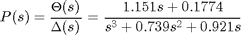
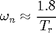
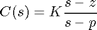
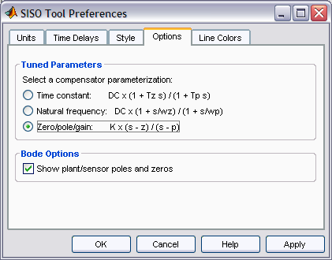
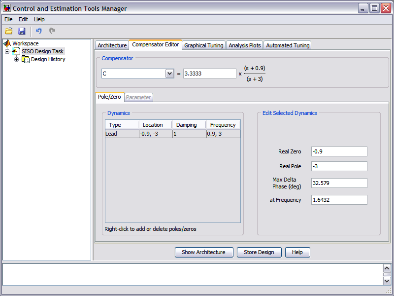
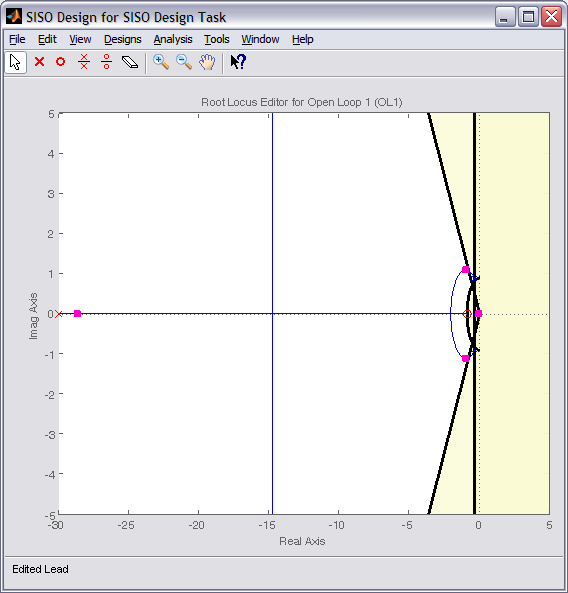
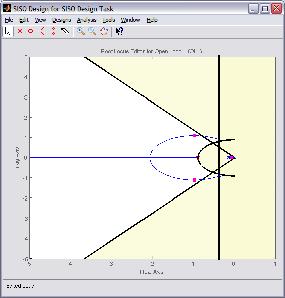
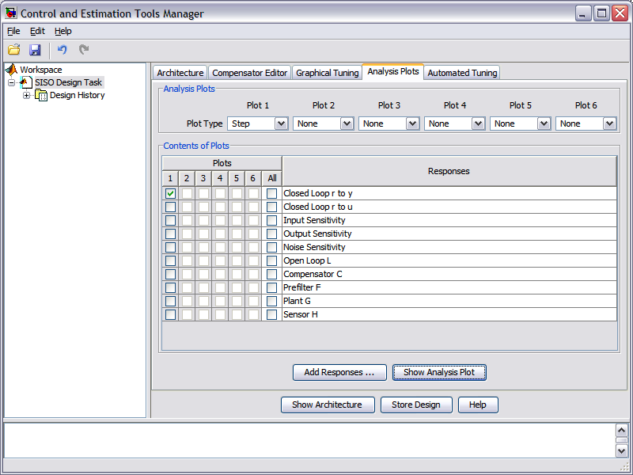
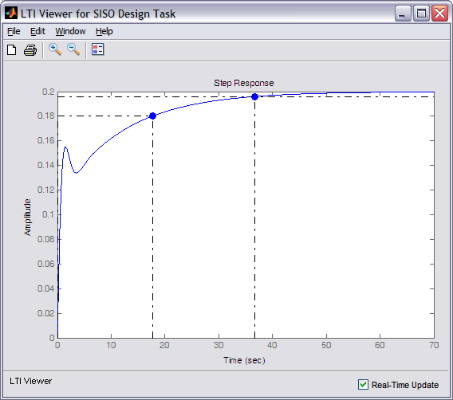
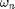

Aircraft Pitch: Root Locus Controller Design
Key MATLAB commands used in this tutorial are: tf , sisotool
Contents
From the main problem, the open-loop transfer function for the aircraft pitch dynamics is
(1)
where the input is elevator deflection angle and the output is the aircraft pitch angle .
For the original problem setup and the derivation of the above transfer function please refer to the Aircraft Pitch: System Modeling page.
For a step reference of 0.2 radians, the design criteria are the following.
- Overshoot less than 10%
- Rise time less than 2 seconds
- Settling time less than 10 seconds
- Steady-state error less than 2%
Recall from the Introduction: Root Locus Controller Design page. a root locus plot shows all possible closed-loop pole locations as a parameter (usually a proportional gain K) is varied from 0 to infinity. We will employ the root locus to design our controller to place our system's closed-loop poles in locations that will result in behavior that satisfies our given requirements. Recall from the Aircraft Pitch: System Analysis page. how pole locations directly affect the character of the system's response to a step reference.
We will specifically use MATLAB's SISO Design Tool to modify the system's root locus to design a compensator to place the system's closed-loop poles to achieve the given design requirements. More specifically, we will use the root locus to design for the requirements on transient response. We will assume the following unity-feedback architecture.

Original root locus plot
We will begin by examining the system's root locus under simple proportional control C(s) = K. First, enter the following code at the command line to define the model of our plant P(s). Refer to the Aircraft Pitch: System Modeling page. for the details of getting these commands.
s = tf('s');
P_pitch = (1.151*s+0.1774)/(s^3+0.739*s^2+0.921*s);
Then, type sisotool('rlocus', P_pitch) in the command window. Two windows will initially open, one is the SISO Design Task which will open with the root locus of the plant with gain K as shown below, and the other is the Control and Estimation Tool Manager which allows you to design compensators, analyze plots, and so forth.

The Control and Estimation Tools Manager window displays the architecture of the control system being designed as shown below. This default agrees with the architecture we are employing.

Since our reference is a step function of 0.2 radians, we can set the precompensator block F(s) equal to 0.2 to scale a unit step input to our system. This can be accomplished from the Compensator Editor tab of the open window. Specifically, choose F from the drop-down menu in the Compensator portion of the window and set the compensator equal to 0.2 as shown in the figure below. Since the addition of this precompensator doesn't effect the closed-loop pole locations, the displayed root locus will remain unchanged.

Recalling that pole locations relate to transient performance, we can identify regions of the complex plane that correspond to pole locations that meet our requirements. These regions assume a canonical second-order system which we do not have even under proportional control, however, the regions serve as a good starting point for our design.
To add the design requirements to the root-locus plot, right-click on the plot and select Design Requirements > New from the resulting menu. You can add many design requirements including Settling time, Percent overshoot, Damping ratio, Natural frequency, and generic Region constraint. Our settling time and percent overshoot requirements can be added directly employing these choices. Rise time is not explicitly included as one of the drop-down choices, however, we can use the following approximate relationship that relates rise time to natural frequency.
(2)
Therefore, our requirement that rise time be less than 2 seconds corresponds approximately to a natural frequency of greater than 0.9 rad/sec for a canonical underdamped second-order system. Adding this requirement to the root locus plot in addition to the settle time and overshoot requirements generates the following figure.

The resulting desired region for the closed-loop poles is shown by the unshaded region of the above figure. More specifically, the two rays centered at the origin represent the overshoot requirement; the smaller the angle these rays make with the negative real-axis, the less overshoot is allowed. The vertical line at s = -0.4 represents the settling time requirement, where the farther to left the closed-loop poles are located the smaller the settling time is. The rise time (natural frequency) requirement corresponds to the circle centered at the origin, where the radius corresponds to a natural frequency of 0.9.
From examination of the above figure, since none of the three branches of the root locus enter the unshaded region, we cannot place the system's closed-loop poles in the desired region by varying the proportional gain K. Therefore, we must attempt a dynamic compensator with poles and/or zeros in order to reshape the root locus.
Lead compensation
We specifically need to shift the root locus more to the left in the complex plane to get it inside our desired region. One way to do this is to employ a lead compensator, refer to the Lead and Lag Compensators page for details.
The transfer function of a typical lead compensator is the following, where the zero is smaller than the pole, that is, it is closer to the imaginary axis in the complex plane.
(3)
Before we begin designing the lead compensator, we need to configure the SISO Design Tool to have a compensator parameterization corresponding to the one shown above. This can be accomplished by clicking on the Edit menu at the top of the Control and Estimation Tools Manager window. Then choose SISO Tool Preferences, and from the Options tab of the resulting window, select a Zero/pole/gain parameterization as shown below.

We will choose to place the zero of our lead compensator on the real axis on the semicircle defined by our rise time requirement, z = -0.9. This will ensure that as the gain K is increased, the branch of the root locus that approaches that open-loop zero won't exit the desired region. Furthermore, we will place the pole farther to the left than the zero, as required by the definition of a lead compensator. To begin with, let p = -3.
Within the SISO Design Tool you can add the lead compensator from under the Compensator Editor tab of the Control and Estimation Tools Manager window. Specifically, right-click in the Dynamics section of the window and select Add Pole/Zero > Lead. Then enter the Real Zero and Real Pole locations as shown in the following figure.

In order to see the effect of moving the pole of the lead compensator, you can enter different numerical values under the Compensator Editor tab. Any changes in the compensator here will be reflected in the root locus plot. Alternatively, you can tune the compensator graphically directly from the root locus plot. Specifically, if you click on the open-loop pole at -3 (marked by a red x) you can then slide the pole along the real axis and observe how the root locus plot changes. Specifically, you should see that as you move the pole to the left, the root locus gets pulled farther to the left (and further into our desired region). Placing the pole at -30 will generate the figure shown below.

Right-clicking on the root locus plot and choosing Properties from the resulting menu, we can change the limits of the graph in order to zoom in on the region of the root locus nearer to the origin as shown below.

From examination of the two above plots, three of the branches of the root locus clearly pass through the desired region. The fourth branch on the real axis closer to the origin is not in the desired region. Even though the closed-loop pole associated with that branch is slower than the other closed-loop poles, its effect will be canceled somewhat by the closed-loop zero at -0.1541. The larger the value of the loop gain K employed, the closer this closed-loop pole will be to the closed-loop zero and the less effect it will have. The locations of the closed-loop poles for the current value of the loop gain (in the above figures K = 33.3) are indicated by the pink boxes on the root locus. The closed-loop pole located farthest to the left will have minimal effect on the transient response of the system since it is significantly faster than the other closed-loop poles.
In order to see the explicit effect of the zeroes and higher-order poles, we will need to examine the closed-loop step response. This can be done within the SISO Tool, specifically, from under the Analysis Plots tab of the Control and Estimation Tools Manager. Once you have clicked on this tab, choose Step from the drop-down menu under Plot 1 of the Analysis Plots section of the window and select Closed loop r to y from under the Contents of Plots section of the window as shown below.

Then by clicking the Show Analysis Plot button a window entitled LTI Viewer for SISO Design Task displaying the system's closed-loop step response will open. You can also identify some characteristics of the step response. Specifically, right-click on the figure and under Characteristics choose Settling Time. Then repeat for Rise Time. Your figure will appear as shown below.

From the above, we can see that for the current value of gain K the settling time and rise time are both too large. Let's attempt to modify the loop gain graphically by clicking on one of the pink boxes on the root locus and dragging the box along the locus in the direction of increasing K. As you do this, the step response plot will automatically update. The effect of increasing K to a value of 200 will be that the two slowest closed-loop poles will approach closed-loop zeros thereby making their effect minimal. The next slowest pole moves to the left in the complex plane with increasing K which has the effect of reducing both the settle time (increased ) and the rise time (increased ). A loop gain of K = 200 keeps all of the poles on the real-axis, leading to no overshoot and the presence of the integrator in the plant guarantees zero steady-state error. Therefore, this controller meets all of the given requirements as shown in the figure below.